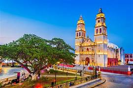
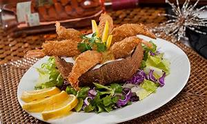
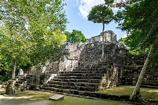

Campeche, un estado ubicado en la península de Yucatán, en el sureste de México, te invita a sumergirte en un fascinante viaje a través del tiempo. Su rica historia, plasmada en majestuosas zonas arqueológicas mayas y ciudades coloniales amuralladas, te cautivará por completo.

Pan de cazón: Quizás el platillo más representativo de Campeche. Se trata de capas de tortillas de maíz rellenas de cazón desmenuzado, frijol colado, aguacate y salsa de jitomate con habanero. Panuchos: Estas tortillas rellenas de frijol negro se coronan con cochinita pibil (carne de cerdo marinada en achiote y cocida bajo tierra) o con poc chuc (carne de cerdo deshebrada con naranja agria y cebolla morada). Frijol con puerco: Un plato sencillo pero muy sabroso. Se prepara con frijoles puercos cocidos con carne de cerdo salada y especias. Ceviche de pescado: Pescado fresco marinado en jugo cítrico con verduras picadas, cebolla morada y chile habanero.

Campeche cuenta con una serie de sitios arqueológicos mayas de gran importancia histórica y cultural. Entre los más destacados se encuentran Calakmul, una antigua ciudad maya situada en la selva, y Edzná, que cuenta con una impresionante acrópolis y un sistema de canales. Estos sitios ofrecen a los visitantes la oportunidad de explorar las ruinas de antiguas civilizaciones y aprender sobre la historia de la región.

Notas relevantes:
El verdadero nombre de la capital:La ciudad de Campeche, capital del estado, no siempre se llamó así. En sus inicios, fue fundada como Villa de San Francisco de Campeche en 1540.
El estado menos poblado: De acuerdo a los registros de población de México, Campeche es el tercer estado menos poblado, después de Colima y Baja California Sur.
Fronteras con dos países: Campeche es el único estado de la República Mexicana que tiene frontera con dos países: Guatemala y Belice.